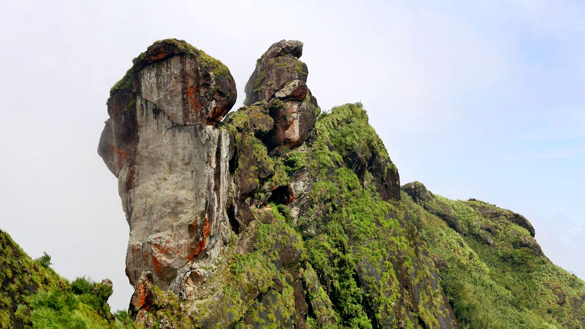
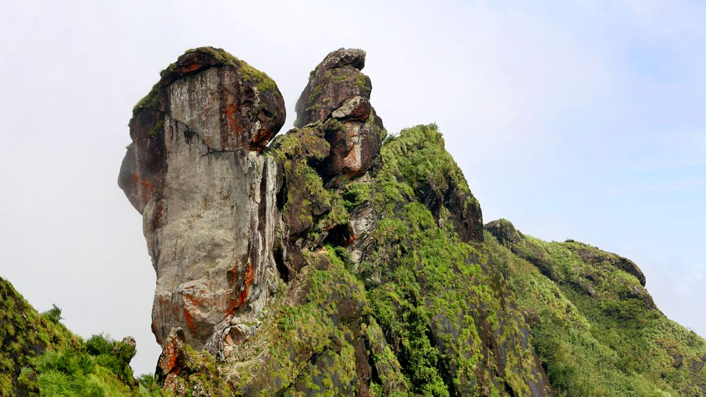

Nadukaani
After all the blessings from temples, it is time for some adventure. Nadukani is one such place nestled amid the wilderness of nature and densely wooded hills offering its visitors a beautiful trail for trekking


After all the blessings from temples, it is time for some adventure. Nadukani is one such place nestled amid the wilderness of nature and densely wooded hills offering its visitors a beautiful trail for trekking
Located at a height of 6000 ft above the sea level in the Western Ghats of Kottayam, Kerala, Illikkal Kallu is a major tourist attraction and one of the most pristine spots in all of India. Situated in Moonnilavu Village, Meenachil taluk, the nearest city to the summit is Teekoy.
 

Located at a distance of few kms from Erattupetta in Kottayam inside a private rubber estate, Marmala Waterfalls are popularly known as the ‘enchantress of the jungle’. Plummeting from a height of 200 feet, the unblemished clear waters create and aura of mist around them.